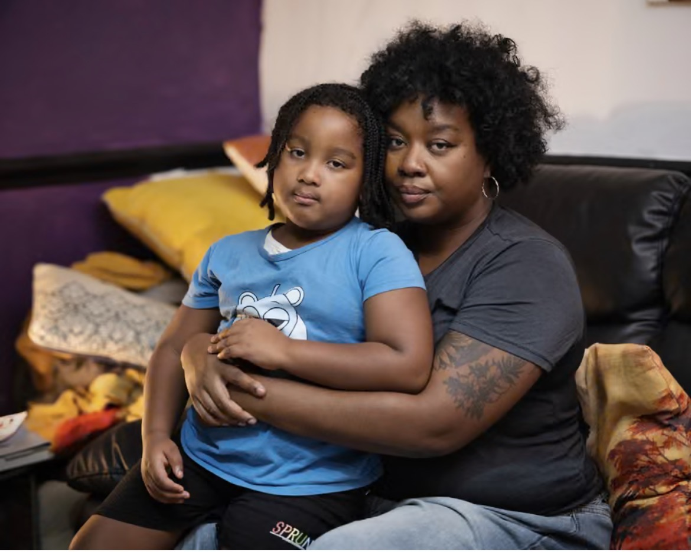
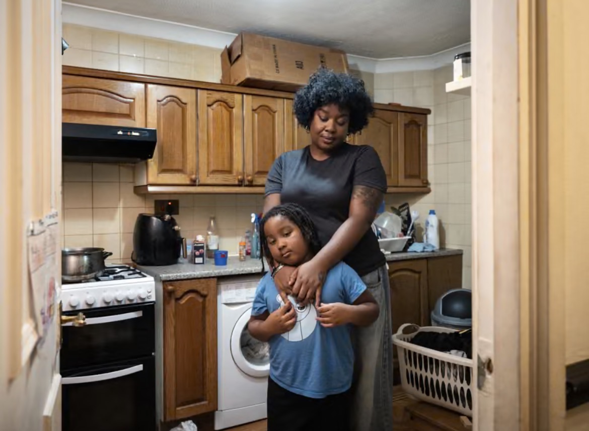
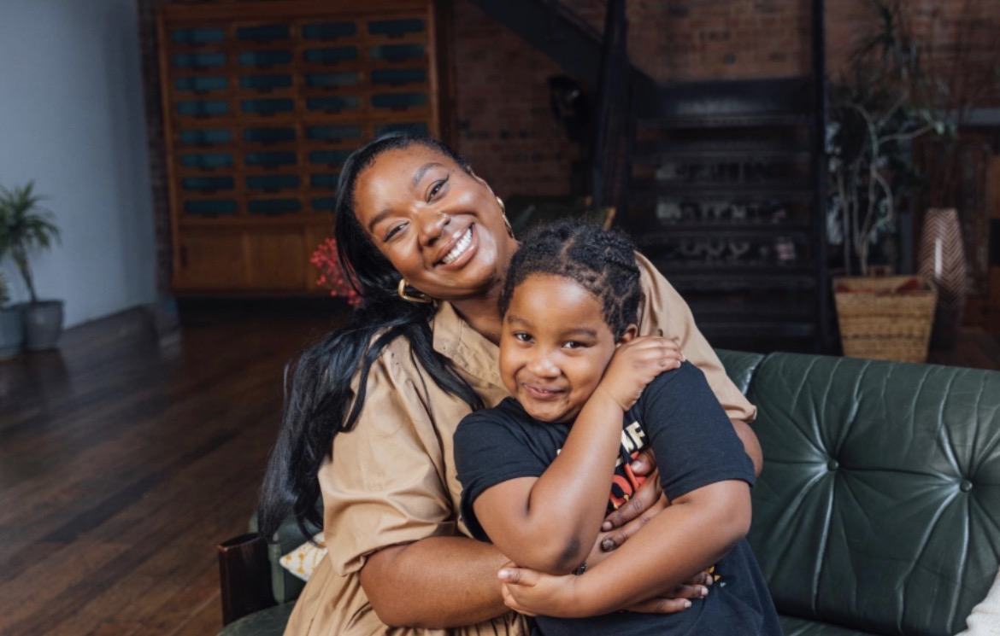

Temporary Accommodation
Stronger safety, suitability, inspection and emergency safeguards.
HOUSING JUSTICE • LEGISLATIVE REFORM
Housing is more than four walls. It is safety, dignity, stability and the foundation of a life.
Aeon's Law campaigns for stronger housing legislation, enforceable standards and institutional accountability.
THE MOVEMENT
Aeon's Law began with one family's experience of housing insecurity. Its purpose is housing justice for everyone.
WHERE IT ALL BEGAN
Alicia Samuels and her son Æon spent nearly seven years navigating temporary accommodation and housing insecurity.
Those experiences exposed the distance between housing rights on paper and what residents experience in reality.
Aeon's Law carries her son's name, but its mission is universal: safer homes, enforceable protections and meaningful accountability for everyone.
LIVED EXPERIENCE


OUR MISSION
Aeon's Law advocates for legislative reform, enforceable housing standards and institutional accountability across three housing sectors.
Stronger safety, suitability, inspection and emergency safeguards.
Enforceable standards, timely repairs and accountability when landlords fail.
Meaningful protection against unsafe conditions and ineffective enforcement.
OUR FIVE PRIORITIES
Independent scrutiny of housing conditions and institutional failures.
Clear timescales for serious repairs, backed by effective enforcement.
Urgent intervention and suitable alternative accommodation when needed.
Transparent oversight and meaningful sanctions for institutional failures.
Recognising the impact of housing insecurity on residents of all ages, including children.
PARLIAMENTARY ENGAGEMENT
Aeon's Law is bringing lived experience into conversations about housing legislation, public policy and institutional accountability.
Written evidence has been submitted to Parliament, contributing to discussions about stronger housing protections.
Our goal is to turn experience into practical, enforceable change.
Aeon's Law advocates for legislative reform. Its proposals are not presented as laws already in force.
COLLECTIVE ACTION
Housing justice requires more than awareness. It takes community organising, public pressure, resident participation and legislative action.
COMMUNITY ORGANISING
Working alongside housing campaigners to challenge injustice and strengthen the collective voice of residents.
Read the campaign coverage
PUBLIC STORYTELLING
Using storytelling and lived experience to help people understand the human consequences of housing failures.
Explore the Shelter campaignSHELTER WINTER CAMPAIGN 2026
Through Shelter's winter campaign, Alicia and Æon shared moments of family life, connection and what home means beyond four walls.
These photographs capture tenderness, personality and the everyday experiences that housing policy must never lose sight of.


Shelter Winter Campaign 2026.
FAMILY AND LEGACY

Home should be the place where people feel safe enough to grow, rest and imagine a future.
Aeon's Law began with a mother's determination to protect her son. Today, the campaign seeks stronger housing rights for everyone.

SHELTER • WALK FOR HOME
Alicia and Æon's housing journey has been recognised through Shelter's Walk for Home mural project.
The project offers another way to bring lived experience into public conversations about housing justice.
The portrait shown here is part of the campaign photography, not a photograph of the completed mural.
MEET THE FOUNDER
Alicia Samuels is a housing justice campaigner and the founder of Aeon's Law.
Drawing on lived experience, public campaigning and engagement with housing organisations, she advocates for systemic reform.
Her focus is on changing legislation, strengthening institutional accountability and making housing rights enforceable.
Aeon's Law is not a direct casework service. Its work centres on wider housing reform and accountability.
Speaking and collaboration enquiries
OUR STORY IN THE MEDIA
Alicia and Æon's experience reached a national audience through media coverage involving Alison Hammond.

Public storytelling helped bring attention to the human consequences of housing insecurity.
Read the national coverageITV NEWS
ITV News explored Alicia's housing experience and her campaign for stronger legal protections.
IN THE MEDIA
Journalism and public storytelling have helped bring housing injustice into national conversations.
Read the coverage
THE i PAPERRead the report
THE GUARDIANRead the reporting
METRORead the feature
THE BIG ISSUERead the coverage
THE MIRRORRead the article
CAMPAIGN HISTORY
The Aeon's Law parliamentary petition closed in October 2026.
The campaign continues through legislative advocacy, public engagement and work towards enforceable housing reform.
View the Closed PetitionSUPPORT THE MOVEMENT
Explore the Aeon's Law shop and help keep the conversation about housing justice visible.
Visit the ShopGET IN TOUCH
For media enquiries, speaking opportunities, research, partnerships and legislative collaboration, contact Aeon's Law.
Email Aeon's Lawalicia@aeonslaw.org
Aeon's Law is a legislative advocacy campaign, not an individual housing advice service. For urgent housing advice, please contact an appropriate advice organisation such as Shelter or your local advice centre.